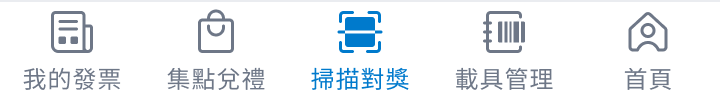

我要如何存入發票？

- 前往「發票對獎」分頁，即可立即掃描發票。
- 若您同時有電子發票與傳統發票，請點擊畫面上方的掃描器「開關」，即可切換模式。
- 掃描電子發票時，請將鏡頭對準的 QR code。成功時，畫面下方會顯示發票期數與號碼，資料將會自動存入並與財政部同步。
- 掃描傳統發票時，請將鏡頭對準的發票號碼。成功時，畫面下方會顯示發票期數與號碼，您可以選擇是否將發票存入 App 以方便後續查閱。
如果您無法成功掃描發票，可以試試：
- 確保 QR code 或發票號碼沒有被折疊或破損。
- 將發票放在平坦的表面上。
- 調整相機的角度與對焦。
- 嘗試在光線充足的地方掃描發票，或開啟閃光燈補充光線。
- 如果您仍無法掃描發票，可以切至「手動對獎」填入發票末三碼對獎。